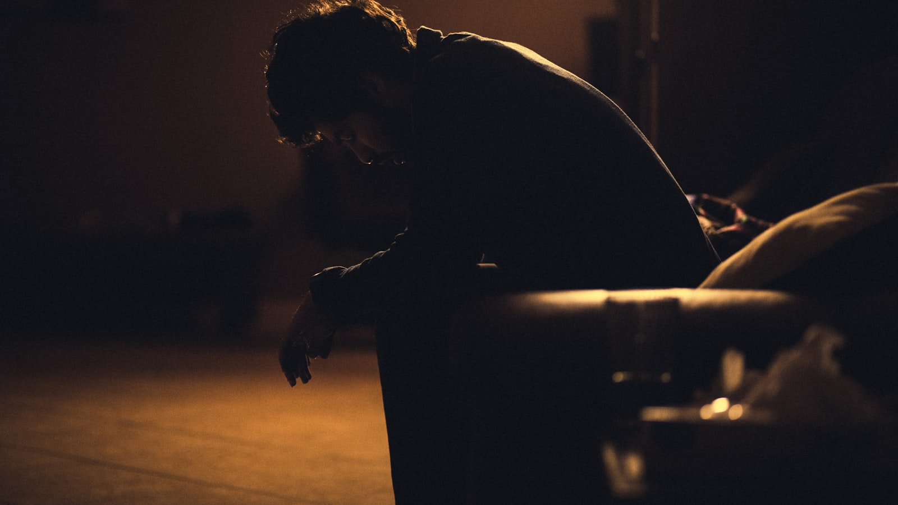
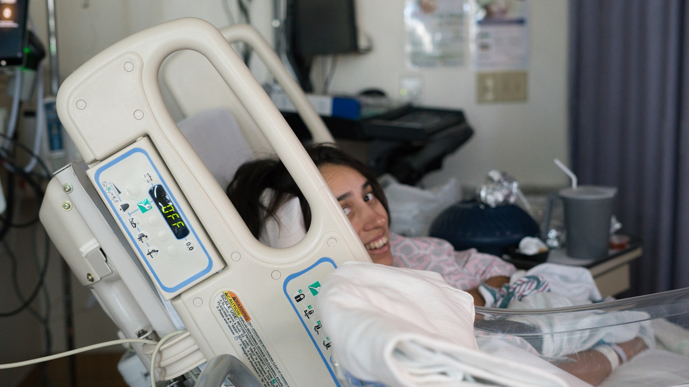

DİAQNOZ
Depressiyanın Müalicəsi
Klinik depressiya — xarakter zəifliyi deyil, müalicəyə cavab verən bioloji vəziyyət. CBT və medikamentoz yanaşma.
Klinik depressiya — xarakter zəifliyi deyil, müalicəyə cavab verən bioloji vəziyyət. CBT və medikamentoz yanaşma.
Bu simptomlardan biri iki həftədən çox davam edirsə, bu artıq əhval deyil — mütəxəssisə müraciət etmək lazımdır
Boşluq, ümidsizlik, «heç nəyin fərqi yoxdur» hissi. Keçici əhval deyil, günlərlə davam edən vəziyyət.
Sadə işləri yerinə yetirmək belə böyük güc tələb edir. Yorğunluq yatmaqla keçmir.
Əvvəllər zövq verən fəaliyyətlər artıq cəlbedici deyil. Sevdiklərindən uzaqlaşma.
Həddindən artıq yatma və ya yata bilməmə. Hər iki variant depressiyanın siqnalı ola bilər.
Hər şeyi özünə bağlama, dəyərsizlik hissi, özünə tənqidin həddindən artıq artması.
Baş ağrısı, qarın ağrısı, iştah dəyişikliyi — tibbi səbəb tapılmayan fiziki simptomlar.
KDT, dəstəkləyici psixoterapiya və psixotəhsil — sınanmış birləşmə
Depressiyanın növü, şiddəti və müddəti müəyyənləşdirilir. Tibbi tarixçə nəzərdən keçirilir.
KDT metodları ilə mənfi avtomatik düşüncələr tanınır və real alternativlərə çevrilir.
Kiçik addımlardan başlayan fəaliyyət planı hazırlanır. Həyat yenidən mənalı hiss etməyə başlayır.
Depressiyanın yenidən başlamasını tanımaq və dayandırmaq üçün fərdi plan hazırlanır.
Tək sessiya və ya aylıq terapiya paketi — sizə uyğun formatı seçirik
BirBank, TamKart, BolKart, WorldKart ilə ödəniş mümkündür. Bank köçürməsi qəbul edilir.
Depressiyanın diaqnostikası, müalicəsi və gündəlik həyata qayıdış barədə elmi əsaslı yazılar

Məqalə · 9 dəq oxuma Depressiya Kədərdən Necə Fərqlənir? — 7 klinik əlamət › Məqalə · 11 dəq oxuma
KDT Depressiyada Necə İşləyir? — prinsiplər və protokol
›
Məqalə · 11 dəq oxuma
KDT Depressiyada Necə İşləyir? — prinsiplər və protokol
›
 Məqalə · 9 dəq oxuma
Antidepressantlar — Faktlar və Miflər
›
Məqalə · 9 dəq oxuma
Antidepressantlar — Faktlar və Miflər
›

Məqalə · 8 dəq oxuma Postpartum Depressiya — Tanımaq və Müalicə › Məqalə · 7 dəq oxuma
Mövsümi Depressiya (SAD) və İşıq Terapiyası
›
Məqalə · 7 dəq oxuma
Mövsümi Depressiya (SAD) və İşıq Terapiyası
›